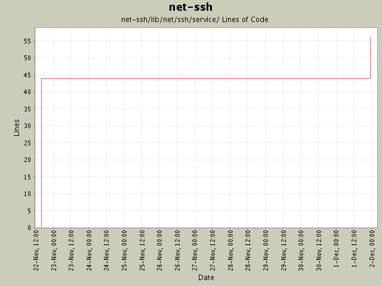

Summary Period: 2004-11-22 to 2004-12-01
[root]/net-ssh/lib/net/ssh/service
 forward
(4 files, 550 lines)
forward
(4 files, 550 lines)
 process
(4 files, 572 lines)
process
(4 files, 572 lines)

Total Lines Of Code:
56 (2005-01-07 15:12)
| Author | Changes | Lines of Code | Lines per Change |
|---|---|---|---|
| minam | 2 (100.0%) | 56 (100.0%) | 28.0 |
Pageant support! Fixed documentation. Bumped version to 0.6.0. Added
support for external services. The USERNAME environment variable is used if
USER is not set. Moved the README to the project root (for consistency with
other project files). Fixed some documentation typos.
12 lines of code changed in:
Initial revision
44 lines of code changed in:
Generated by StatCVS 0.2.3